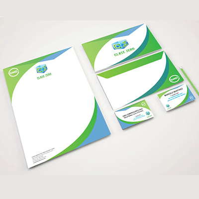
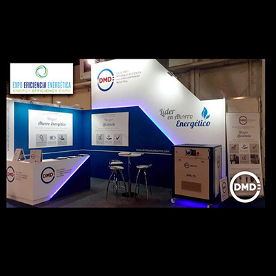
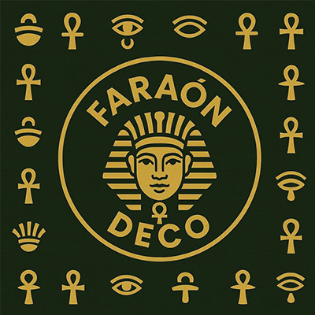

Datos de Contacto
- Teléfono: (011) 1170-813-734
- Email: emilianozatt@gmail.com
- Dirección: Caaguazú 2969, Temperley, Buenos Aires, Argentina
- Fecha de Nacimiento: 07 de octubre de 1992
- Estado Civil: Soltero
- DNI: 36.825.074
- Sueldo Pretendido: $6.000.000 / 6.667 USD
Conocimientos y Habilidades
Informática
- Manejo Avanzado de Office
- Herramientas Gráficas:
- Adobe Photoshop
- Adobe Illustrator
- Adobe InDesign
- CorelDRAW
Idiomas
- Inglés: Escrito Básico, Oral Intermedio
- Arabe: Escrito avanzado, Oral avazado
Experiencia Laboral
Vendedor Comercial y Emprendedor
Faraon Deco | 2016 - Actualidad
- Atención personalizada al cliente y gestión de ventas por redes sociales.
- Desarrollo de estrategias comerciales y branding de marca.
- Diseño, producción y comercialización de artículos de decoración.
- Gestión integral de redes sociales (más de 30.000 seguidores).
Encargado de Monitoreo de Cámaras
Municipio de Lomas de Zamora | 2013 - 2015
- Supervisión del sistema de videovigilancia urbana.
- Control de seguridad y derivación de incidentes a las autoridades correspondientes.
- Manejo de software de monitoreo y registros digitales.
Encargado de Marketing
DMD Compresores | 2015 - 2020
- Diseño de campañas publicitarias para redes sociales y medios impresos.
- Gestión de imagen institucional y desarrollo de identidad visual.
- Diseño y mantenimiento del sitio web corporativo.
Diseñador Gráfico y Operario de Imprenta
APA | 2020 - 2023
- Encargado de impresión en plóter de gran formato (3.2 mts).
- Diseño gráfico para piezas publicitarias y señalética.
- Manejo de plóter de corte, laminadora, guillotina y montajes en vinilo.
- Diseño y armado de corpóreos y soportes promocionales.
Estudios
Licenciado en Diseño y Comunicación Visual
UNLa, Argentina | 01-02-2013 - PRESENTE
Técnico Electromecánico
J. F. Kennedy, Argentina | 01-03-2005 - 01-12-2012
Diseñador Gráfico
Sindicato Luz y Fuerza | 01-03-2012 - 01-12-2012
FOTOS DE TRABAJOS


